library("tinyplot")
x = 1:100 / 10
y = sin(x)
#
## Ribbon plots
# "ribbon" convenience string
tinyplot(x = x, ymin = y - 1, ymax = y + 1, type = "ribbon")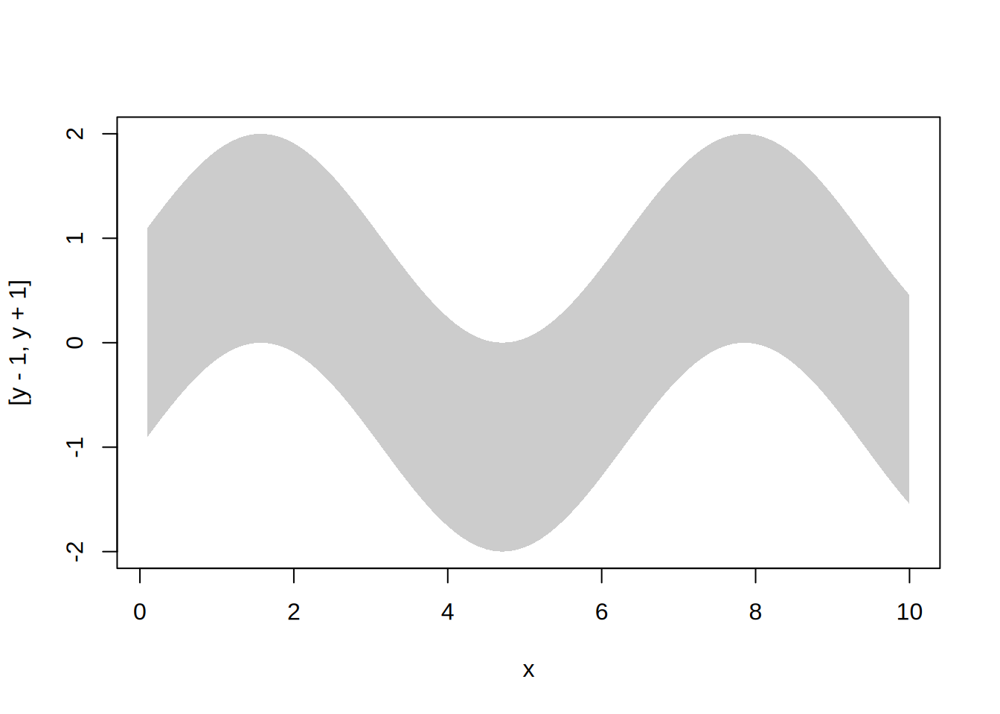
# Same result with type_ribbon()
tinyplot(x = x, ymin = y-1, ymax = y+1, type = type_ribbon())
# y will be added as a line if it is specified
tinyplot(x = x, y = y, ymin = y-1, ymax = y+1, type = "ribbon")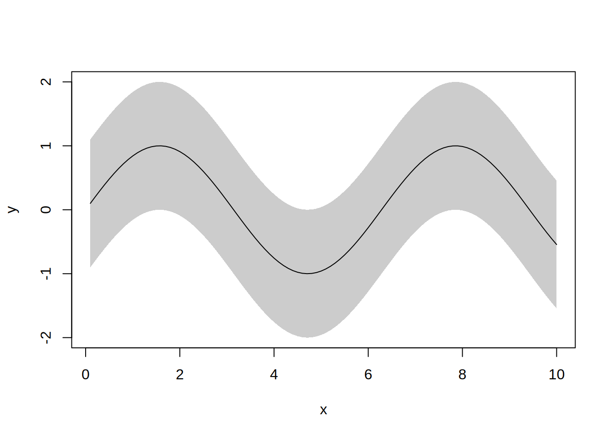
#
## Area plots
# "area" type convenience string
tinyplot(x, y, type = "area")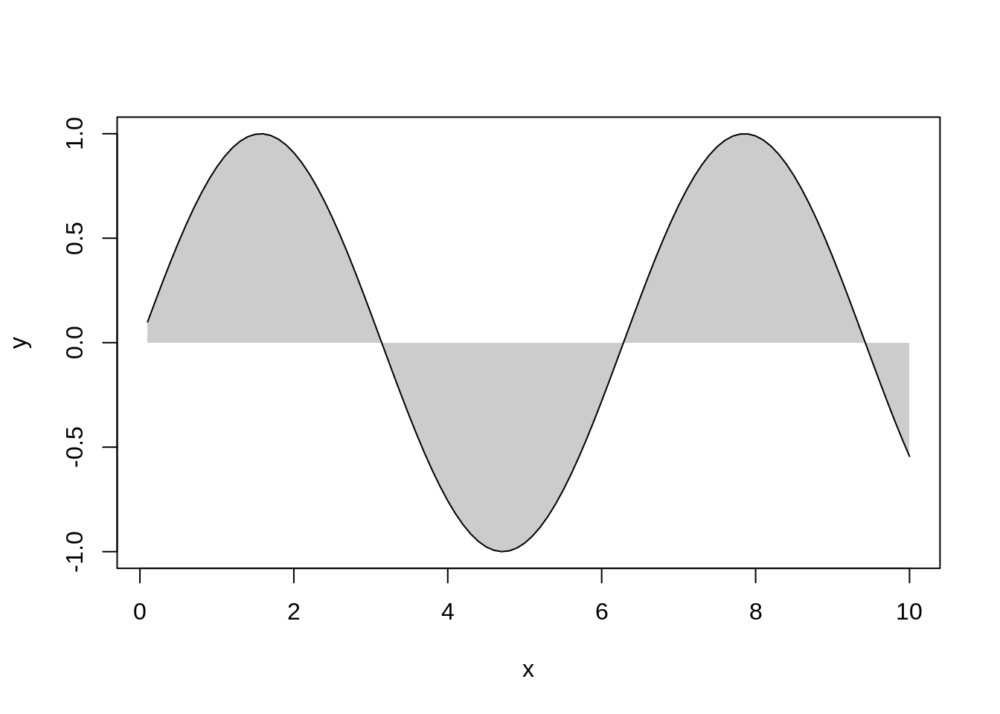
# Same result with type_area()
tinyplot(x, y, type = type_area())
# Area plots are often used for time series charts
tinyplot(AirPassengers, type = "area")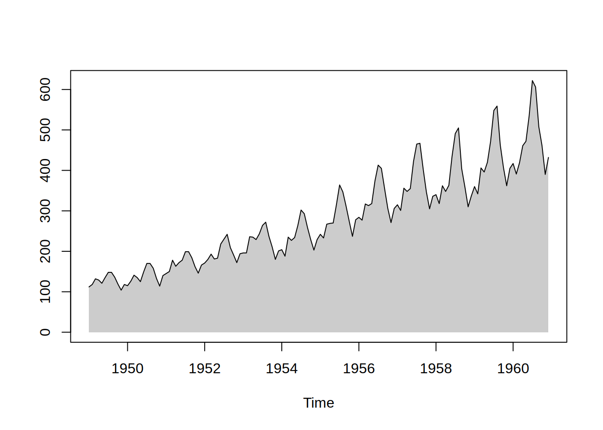
#
## Stacked area plots
# Grouped area plots can be stacked cumulatively, rather than being drawn
# from a common zero baseline.
# Group B is small and steady; A and C are larger and wobblier.
dat = expand.grid(year = 2000:2020, grp = factor(c("A", "B", "C")))
dat$val = as.integer(dat$grp) +
c(1.2, 0.1, 1.8)[dat$grp] * sin(dat$year / 3) +
c(0.06, 0.02, 0.10)[dat$grp] * (dat$year - 2000)
tinyplot(val ~ year | grp, data = dat, type = type_area(stack = TRUE))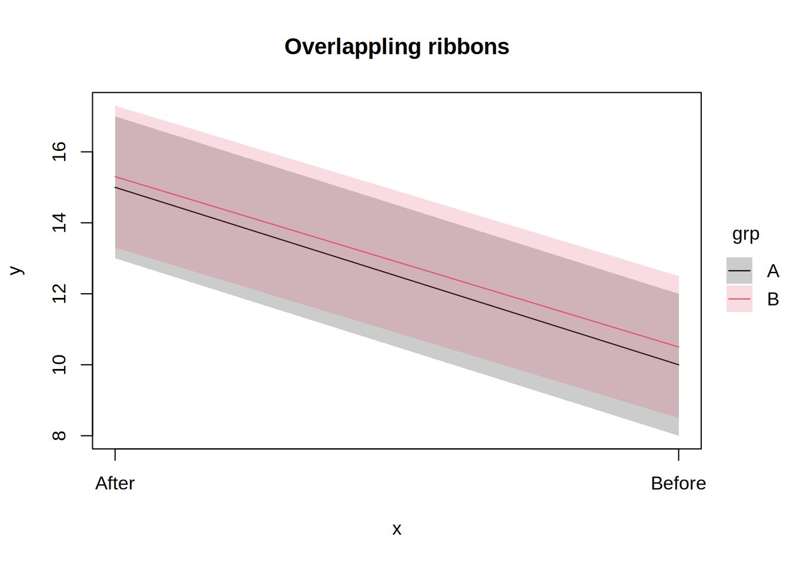
# Use `byord` to control which group stacks where. Here we stack by their
# largest end value.
tinyplot(
val ~ year | grp, data = dat,
type = type_area(stack = TRUE, byord = "end")
)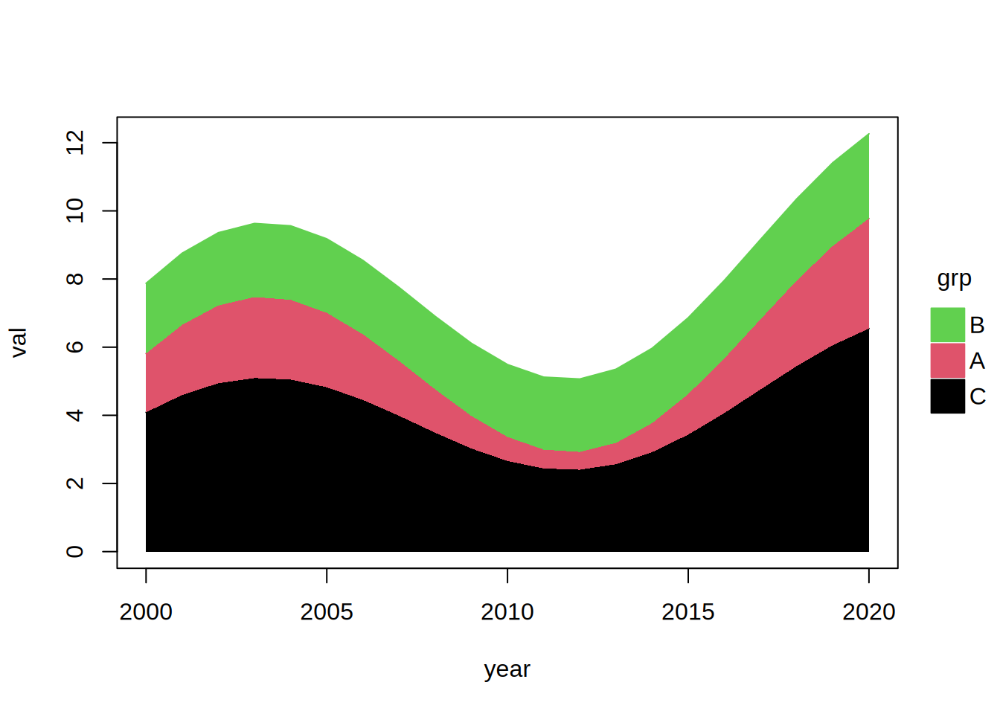
# `"minvar"` instead puts the *least variable* group on the baseline. Every
# band inherits the movement of the ones below it, so a steady bottom layer
# keeps the whole chart legible. Here that picks group B, which the default
# level order leaves in the middle and `"end"`/`"desc"` push to the top.
tinyplot(
val ~ year | grp, data = dat,
type = type_area(stack = TRUE, byord = "minvar")
)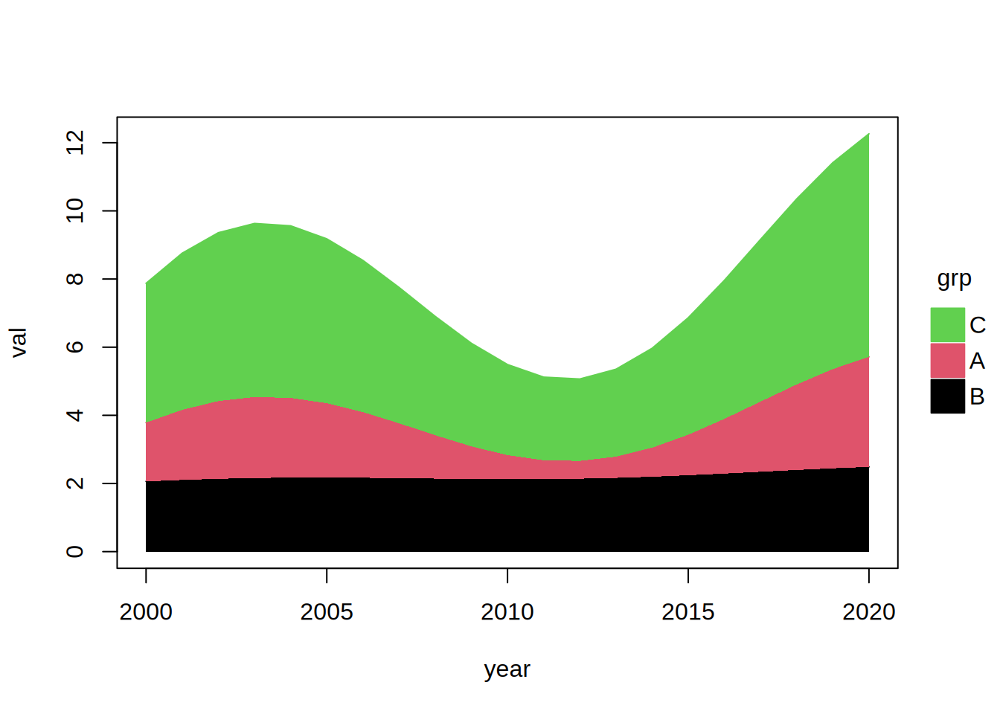
# `"rev"` simply flips the existing level order, which is the one thing a
# ranking function cannot do (it never sees which group it was handed).
tinyplot(
val ~ year | grp, data = dat,
type = type_area(stack = TRUE, byord = "rev")
)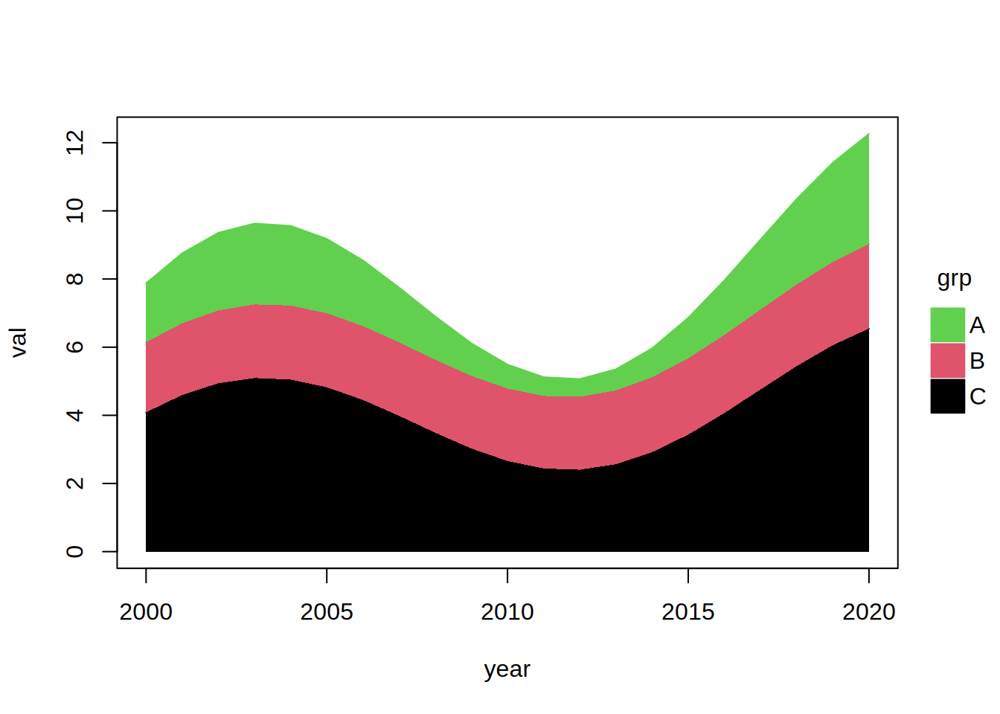
# Custom ranking functions are also accepted. Name an argument `x` and it
# receives the group's x values too, which is what a slope needs.
tinyplot(
val ~ year | grp, data = dat,
type = type_area(stack = TRUE, byord = function(y, x) coef(lm(y ~ x))[2])
)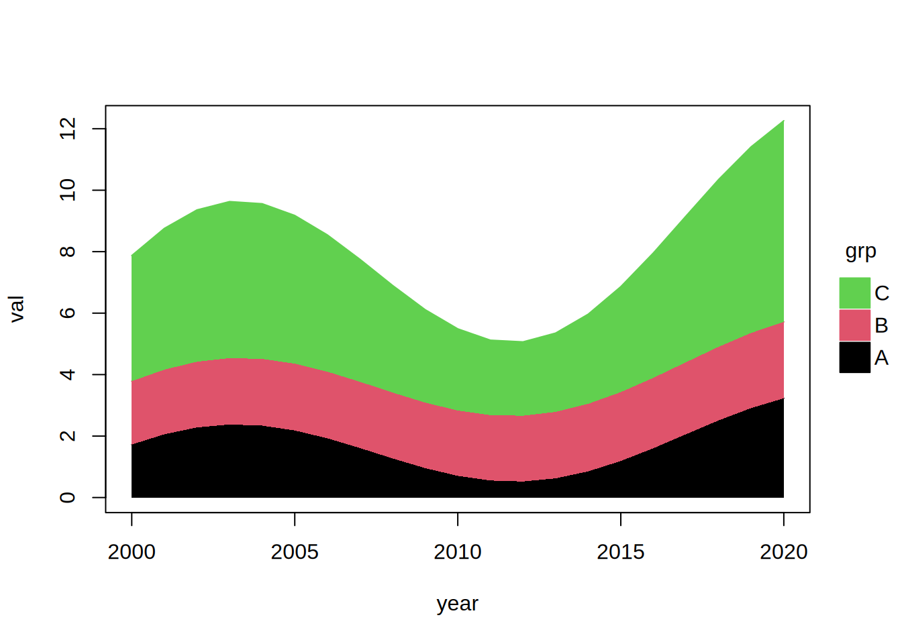
# Stacking expects a single `y` value per group per `x` value. Any repeats
# are collapsed for us first, using `FUN` (`mean` by default). Here, for
# instance, ChickWeight records many chicks per diet at each timepoint.
tinyplot(
weight ~ Time | Diet, data = ChickWeight,
type = type_area(stack = TRUE, FUN = median)
)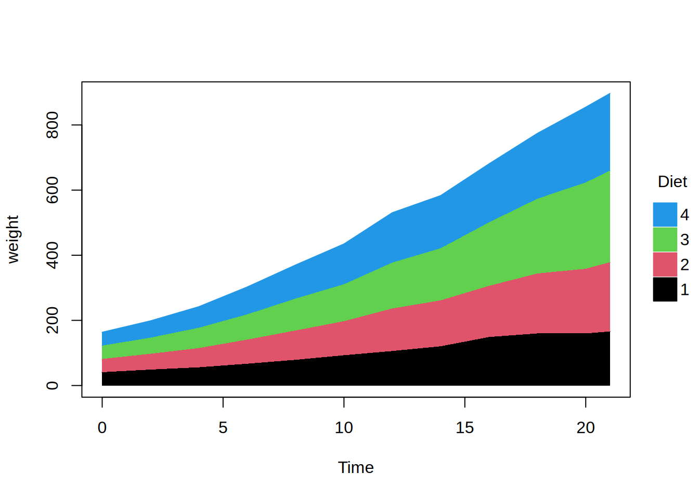
# (Illustrative purposes aside, we leave it to the reader to decide whether
# stacking separate diets on top of one another makes any sense...)
#
## Dodged ribbon/area plots
# Dodged ribbon or area plots can be useful in cases where there is strong
# overlap across groups (and a limited number of discrete x-axis values).
dat = data.frame(
x = rep(c("Before", "After"), each = 2),
grp = rep(c("A", "B"), 2),
y = c(10, 10.5, 15, 15.3),
lwr = c(8, 8.5, 13, 13.3),
upr = c(12, 12.5, 17, 17.3)
)
tinyplot(
y ~ x | grp,
data = dat,
ymin = lwr, ymax = upr,
type = type_ribbon(),
main = "Overlappling ribbons"
)
tinyplot(
y ~ x | grp,
data = dat,
ymin = lwr, ymax = upr,
type = type_ribbon(dodge = 0.1),
main = "Dodged ribbons"
)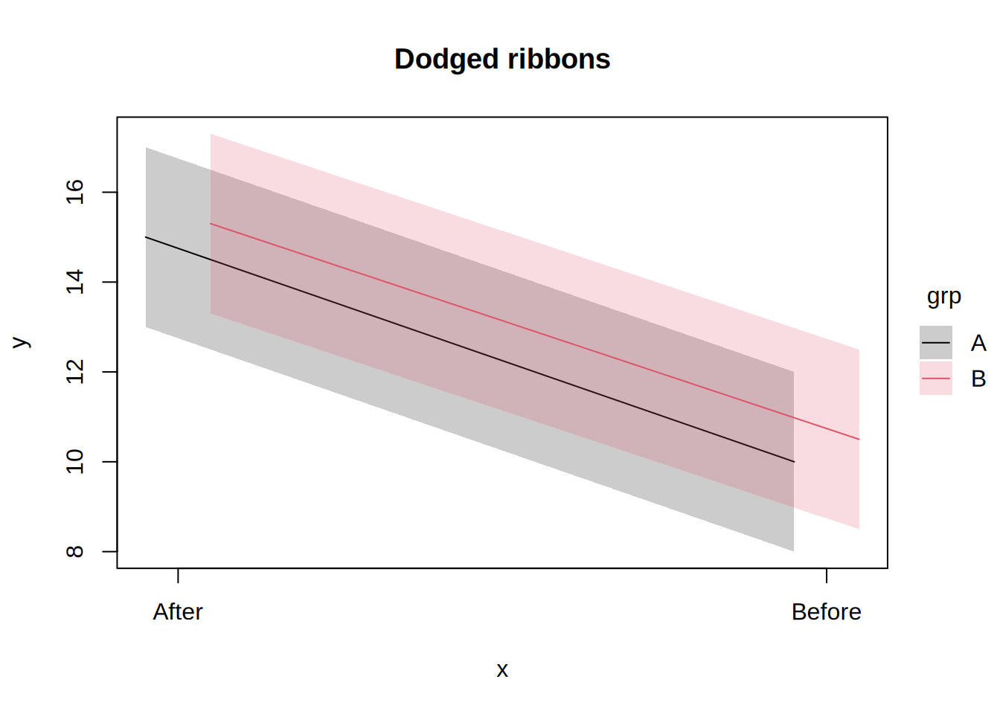